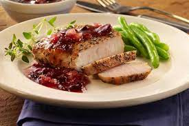

Cranberry Pork Chops

Description
Sweet and savory cranberry pork chops dish.
Equipment
- Stovetop or similar
- Large skillet with lid
Ingredients
Seasoning
- 2 cups fresh or frozen cranberries
- 3/4 cup white sugar
- 1 teaspoon salt
- 1/4 teaspoon ground black pepper
- water as needed
Pork Chops
Steps
- In a skillet, brown pork chops slowly in oil; drain.
- Add cranberries, sugar, salt, and pepper to chops with 1/2 cup water to start. Bring to boil; reduce heat. Simmer, covered, for 45 minutes or until tender but not dry. Add water if necessary to keep chops from drying out.